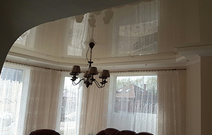
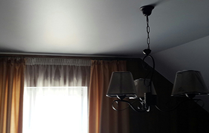
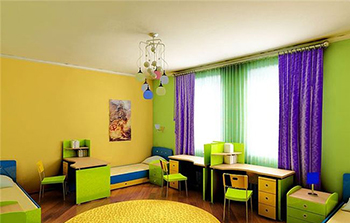
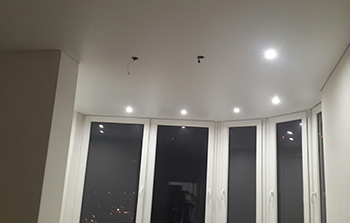
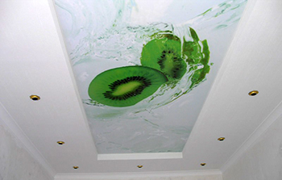
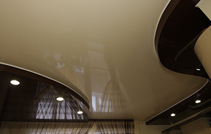

НАТЯЖНЫЕ ПОТОЛКИ






Глянцевые натяжные потолки
Самой большой цветовой палитрой из всех ПВХ-полотен обладают именно глянцевые полотна. Благодаря отражающей свет поверхности, потолки выполняют в дизайне функцию зеркал, визуально делая комнату больше и создавая ощущение простора. При этом чем темнее потолок, тем большей отражающей способностью он обладает.
Большое разнообразие цветов позволяет дизайнерам компании Tritori воплощать самые неожиданные решения, делая потолок прямым, наклонным и даже многоуровневым, сочетая ПВХ-полотно с гипсокартонными конструкциями. Ограничением служит только ваша фантазия. Заказчик может выбрать любой цвет – от белоснежного до иссиня-черного
- глянцевые натяжные потолки зрительно увеличивают помещение
- обладают эффектом "зеркала" (особенно потолки темного цвета)
- прочные - выдерживают до 100 литров воды
- идеально подходят для небольших помещений
Сатиновые натяжные потолки.
Сатиновые натяжные потолки - всегда считались переходной фактурой между матовым и глянцевым полотном. На самом деле это не так. Это вполне самодостаточная и уникальная фактура со своими уникальными возможностями и свойствами. Потолки сатиновой фактуры создают неповторимую уютность в помещении. На данный момент нет аналогичного способа отделки потолка который позволит сделать то, что позволяет сатиновая фактура. Прежде всего, сатиновые ПВХ-потолки эффектно выглядят при разном освещении, а их вид может меняться в зависимости от силы освещения, от того, под каким углом падет свет, и откуда вы смотрите на покрытие. Например, днем оно имеет настоящий цвет, становясь немного светлее там, куда падает искусственный свет.
Микрорельеф позволяет нанести на ПВХ-полотно любой узор или из вашего домашнего архива, или из каталога компании-производителя.
Добавьте к этому сравнительно небольшую стоимость, и вы поймете, почему сатиновые ПВХ-потолки считаются лучшим решением для дома или офиса. При всем при этом, невысокая цена никак не сказывается на функциональных достоинствах ПВХ-полотна. Потолки из сатина замечательно сочетаются с гипсокартонными конструкциями в интерьере, поэтому с их помощью можно воплощать самые смелые дизайнерские идеи.
Отличительные особенности:
- сатиновая фактура - идеальный вариант для натяжных потолков с фотопечатью
- идеальный вариант для натяжных потолков со светодиодной подсветкой
- зрительно увеличивает площадь помещения
- не бликуют как глянцевые потолки
Матовые натяжные потолки.
В нашей компании, вы всегда можете заказать матовые натяжные потолки по самой доступной цене. Среди всех натяжных потолков, матовая фактура самая дешевая.
Кроме того, после установки, она создает впечатление идеально ровного побеленного потолка. Белый матовый натяжной потолок - самый распространенный:
- удачно вписывается в любое помещение
- подходит практически ко всем стилям интерьера
- недорогой
Помимо классического белого потолка вы можете выбрать любой другой цвет. Благо их количество способно удовлетворить любые потребности. Натяжные потолки с фотопечатью станут лучшим инструментом для тех, кто любит экспериментировать и часто меняет дизайн квартиры
Фотопечать на натяжном потолке
Звездное небо на потолке, живописное изображение природы или даже облик любимого актера – в настоящее время нет ничего невозможного. Натяжные потолки с фотопечатью станут лучшим инструментом для тех, кто любит экспериментировать и часто меняет дизайн квартиры.
Двухуровневый натяжной потолок.
Многоярусные натяжные потолки пользуются все большей популярностью в современном дизайне интерьера. Они главным образом используются для декорирования помещения и разделения его на "зоны", для так называемого - зоннирования помещения.
Особым образом многоуровневые натяжные потолки используются для декорирования помещений с большой площадью, хотя не редко используются и на небольших площадях, поскольку способны гармонично сбалансировать верхнюю и нижнюю часть пространства, придав помещению нужную геометрию.
Однако, многоуровневые потолки не только привлекательны внешне, но и функциональны. С помощью объемных многоуровневых конструкций натяжного потолка возможно скрыть различные инженерные коммуникации и сооружения, проходящие под потолком. Так же с помощью многоуровневых натяжных потолков - повышается уровень шумоизоляции и увеличивается энергосбережение.
Copyright © 2016